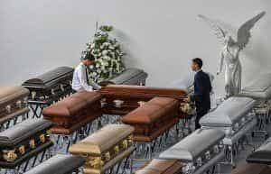
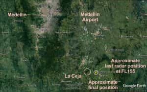

Quintus can be found at qcurtius.com. He is the author of the books On Duties, Thirty Seven, Sallust: The Conspiracy Of Catiline And The War Of Jugurtha, and other books. His work has been reviewed at Taki's Magazine. He can be followed on Twitter


Some days ago on November 28 I received a text message on WhatsApp from a girl I’m very close to in Rio de Janeiro. Shortly after that we spoke directly on the phone. She was distraught, having lost a journalist friend who was aboard the charter plane carrying the team members of the Chapeco football club to their next match. Fifty-one players and people associated with the team were killed when the plane went down in the Andes Mountains near Medellin, Colombia. In such times, you can do little more than try to offer comfort and condolences.
As I read more about the tragedy, I was even more unsettled to learn about the negligence and dereliction of duty that had led to the crash. Accidents involving death are always tragic; they are doubly so when the accidents themselves may have been preventable. I wanted to give my thoughts on the incident here.

Chapeco is a city in the state of Santa Caterina, Brazil. The Chapecoense team had been enjoying unexpected success in its tournament, and was preparing to go into the finals of the Copa Sudamericana, which is the second largest football tournament in South America. The team had been flying from Bolivia to Medellin, Colombia. The jet involved was a British Aerospace 146 aircraft, owned by the Bolivian company LaMia. Although a complete investigation has not been completed, enough details have surfaced for us to reconstruct approximately what happened. It is an unsettling picture.
According to aviation rules, planes are supposed to carry enough fuel to permit them to fly for thirty minutes beyond the time for their scheduled destination. To make up for time lost from a delay, the pilot in this case chose to ignore the need to refuel the jet, believing that he could make it to Medellin. For this failed gamble, he paid with his life, and with the lives of the passengers he was obligated to protect.
According to the flight plan, the pilot was supposed to stop and refuel in the Bolivian city of Cojiba en route to Medellin. But the problem was that this was a charter flight, a private flight, and it was not properly registered with the Colombian aviation authorities. Even more tragic is the fact that the team was originally supposed to leave on a direct flight from Brazil. But because Brazil understandably does not allow charter flights to leave its territory that are not properly registered in their countries of departure or destination, the team had to use a more circuitous route.
So the plan was to fly from Sao Paolo, Brazil to Bolivia, and then go from Bolivia to Colombia. But the flight to Bolivia arrived about an hour late; and this meant that it could not refuel in Cojiba as planned since the airport there could not handle refueling operations at night. Instead of choosing another city to refuel in, the pilot decided top off his tanks and make straight for Medellin; in his estimation, we can imagine, he would make up for lost time and thereby please his passengers.
The pilot, whose name was Miguel Quiroga, should have known better. The flight plan he submitted would have stretched his aircraft’s range capacity to the very limit (4 hours and 22 minutes), allowing no room for error or unexpected fuel consumption en route. Quiroga decided not to make any other alternate plans.
Why this was so, we do not yet know. Perhaps he was coming under pressure by his impatient passengers. Perhaps he overestimated his own abilities. Perhaps he was lazy and didn’t give a shit about the potential consequences. We do not know. What we do know is that Quiroga never should have made the decision he did. It was grossly negligent, perhaps even criminally so; we also do not know why the authorities refused to stop him.

To add tragedy on top of tragedy, it now appears that the plane might have just barely made it but for a last-minute delay as the plane was approaching Medellin. Quiroga had run out of fuel completely and was literally flying on vapors as he drew close to Medellin. We know from a leaked recorded conversation with the aviation authorities in Medellin that he asked for emergency permission to land due to impending equipment failure. Apparently he did not make his point clearly enough, or perhaps he tried to camouflage the true extent of the crisis.
But air traffic control told Quiroga to wait another ten minutes or so, since there was another plane that needed an emergency landing. This extra few minutes were what tipped the scales of Fortune against him and the passengers, for the plane could not stay in the air for another ten minutes. Flight 2933 then began its terrible descent from the skies, crashing into a mountainside just 30 miles from Medellin.
What makes this event so supremely tragic is that it was so preventable. At any link in this chain of Fate, prudent consideration might have stopped the rush to disaster. But it was not to be. In such ways does Fortune remind us that she alone is the arbiter of all events, and will always punish the willful arrogance of men, hurtling them to their doom for their folly.
Read More: Why Men Cannot Be Both Free And Equal